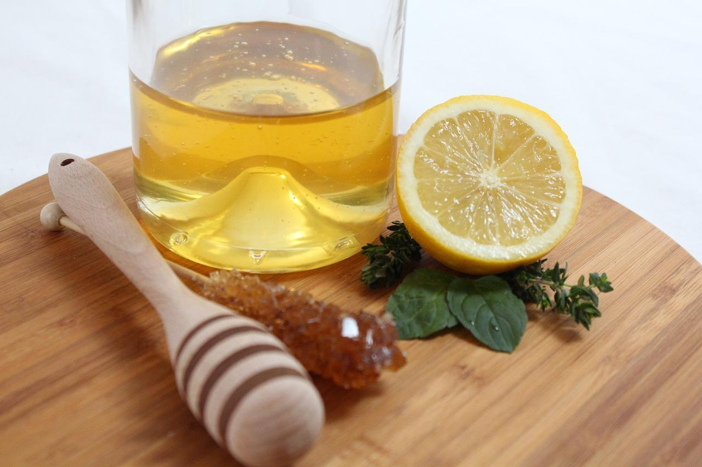
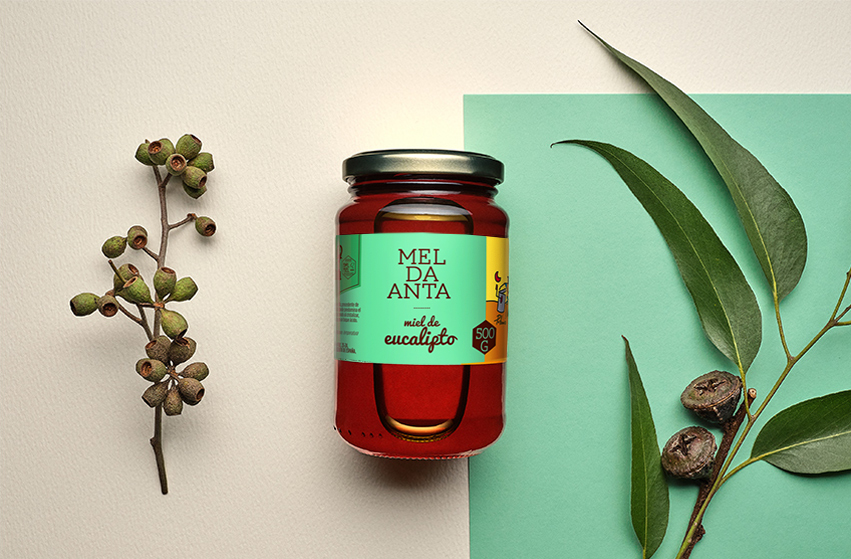
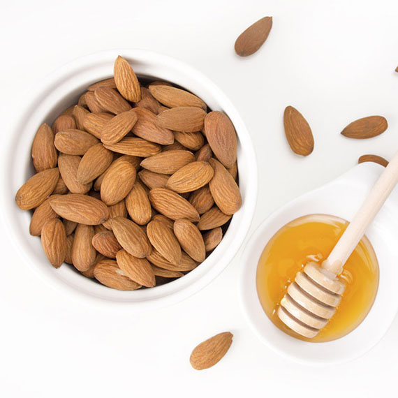
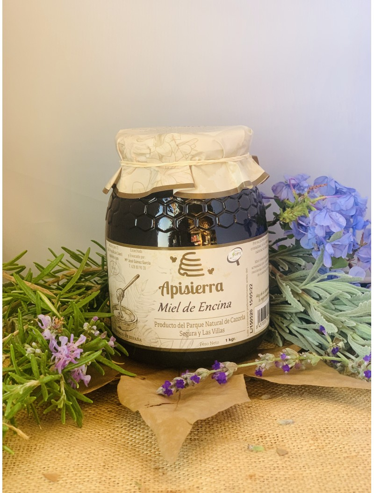

Miles De Mella Lideres en el mercado
Con 18 años de experiencia en el rubro de la Apicultura De Mella nos muestra
uno de los catalagos mas variados en Mieles

Miel de Limon
La miel de limón es una de las grandes en el universo apícola. Fuertemente asociada al limonero y sus olorosos azahares, esta variedad dispone de unas cualidades nutricionales y terapéuticas únicas en el mundo, siendo un remedio milenario para combatir un sinfín de dolencias y enfermedades.
Miel de Azahar
De color amarillento, procede de las flores de cítricos, es suave al gusto y posee un perfume característico. Tiene una gran cantidad de azúcares que cristalizan y le dan gran densidad, por eso es más sólida. Tiene propiedades sedantes y relajantes. Se recomienda para tratar insomnio, ansiedad o nerviosismo.

Miel de Eucalipto
Es una miel que tiene un color ocre, además de un sabor amaderado y un olor muy característico. Sus propiedades son antisépticas y tiene efectos balsámicos. Ayuda a todo el aparato respiratorio
Miel de Tomillo
De color oscuro, cristaliza irregularmente. Es antiséptica, digestiva y buena para prevenir o atajar infecciones. Se recomienda para evitar flatulencias, acidez de estómago, diarrea y también para prevenir o tratar resfriados, gripe, anginas o bronquitis. Al ser rica en hierro, también se recomienda para la anemia.

Miel de Almendro
Es la primera miel de la temporada ya que el almendro es el primero de los árboles frutales en florecer dando paso a la primavera. De color muy claro, con tonos amarillentos, no tiene una cristalización rápida. Es beneficiosa para la circulación puesto que sus propiedades emolientes tonifican la dermis y evitan la retención de líquidos

Miel de Encina
Proviene de la melaza que se desprende de las bellotas. Es una de las mieles más oscuras, a veces hasta negra. Es bastante fuerte aunque tiene buen sabor. Es rica en hierro y tiene propiedades astringentes (combatir diarreas), estimulantes y digestivas.